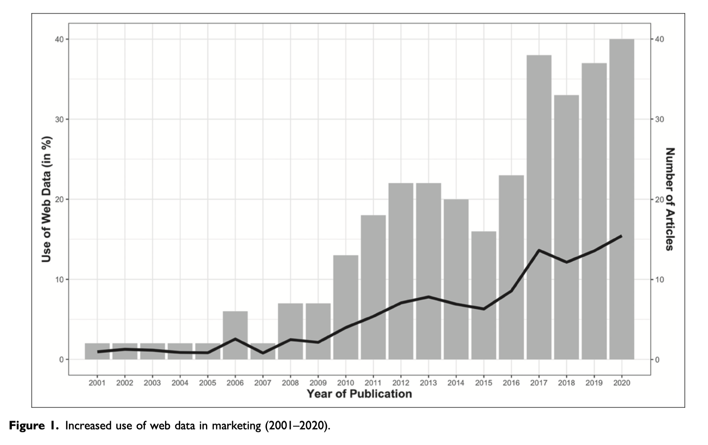

Boegershausen, Johannes, Hannes Datta, Abhishek Borah, and Andrew Stephen. “Fields of gold: Scraping web data for marketing insights.” Journal of Marketing (2022).
本文是JM中少有的技术流综述文，阅读起来晦涩难懂，我们就大概知道怎么回事， 查看有没有自己感兴趣的研究(方法)即可。该文作者为该综述专门开发了一个 web-scraping.org 的网站,截图如下

摘要
市场营销学者越来越多使用网络爬虫和API接口，从互联网收集数据。尽管网络数据得到广泛使用，但很少有学者关注收集过程中面临的各种挑战。研究人员如何确保采集的数据集是有效的？ 虽然现有资源强调提取网络数据的技术细节，但作者提出了一种新的方法框架，重点是提高其有效性。特别是，该框架强调解决有效性问题， 需要在数据采集的三个阶段(选择数据源、设计数据收集和提取数据)联合考虑技术和法律/伦理问题。作者进一步审查了营销Top5期刊上300 篇使用网络数据的论文，并总结提出了如何使用网络数据促进营销研究。本文最后指出了未来研究的方向，高价值的网络数据源和新方法。
Keywords：
- web scraping
- application programming interface, API
- crawling
- validity
- user-generated content
- social media
big data
一、网络数据的魅力
社会和商业生活的加速数字化创造了数量空前的消费者和企业行为数字痕迹。 每分钟，全球用户在 Google 上进行 570 万次搜索，进行 600 万次商业交易，并在 Instagram 上分享6.5万张照片（Statista 2021）。 由此产生的网络数据——规模庞大、形式多样，而且通常可以在互联网上公开访问——对于那些想要量化消费、深入了解企业行为并跟踪难以或昂贵地观察社会活动的营销学者来说，这是一个潜在的金矿 . 网络数据对营销研究的重要性反映在越来越多的有影响力的出版物中，涵盖消费者文化理论、消费者心理学、实证建模和营销策略等。

整理了 营销领域 top 5 期刊( JM、JMR、JCR、JCP、MS) 的 313 篇论文 ，经过整理绘制图-1（Figure1）， 使用网络数据进行研究的量呈现快速上涨的趋势。使用网络数据的论文占比，从2010年的4%提升到2020年的15%。 者313篇论文，数据的获取方式统计
- 59% 的论文使用了网络爬虫采集数据
- 12% 的论文使用API收集数据
- 9% 的论文同时使用了网络爬虫和API
- 20% 使用人工从网站手动复制粘贴数据
使用 网络数据 的论文，平均被引用次数 7.55， 远高于 非网络数据 的 3.90。
使用网络数据做新研究，大致有4种实现路径
- 研究新现象，新场景
- 网络世界产生的不同于现实世界的情景，可以研究新现象
- 繁荣生态价值
- 比如，对亚马逊评论数据进行研究，研究发现可以帮助亚马逊平台进行改善。
- 促进方法论进步
- 文本、图片、音频、视频等
- 提高测量效果(快、准、好、全)
- 借助一些API，可以对已有的数据集增加新的信息量。
- 例如，日期数据，结合HolidayAPI，可以查看日期的节假日信息
- 给定日期和IP地址，使用Weather Underground可以查看天气信息
二、数据采集的方法框架
在使用 **网络爬虫 和 API ** 自动收集网络数据时，研究人员通常会在 **研究有效性、技术可行性和法律/伦理风险 **1 三者间权衡利弊得失，研究人员如何解决这些权衡，通过增强或破坏 统计结论有效性、内部有效性、结构有效性和外部有效性 来塑造研究结果的可信度（Shadish、Cook 和 Campbell 2002）。
本文开发了一个方法框架，为使用 网络爬虫 和 API 自动收集网络数据提供指导。图 2（Figure 2） 涵盖三个关键阶段
- 数据源选择
- 设计方案
- 从网站中抽取哪些信息
- 采集频率，即 每天(周/月)重复运行一次爬虫，得到面板数据
- 执行数据采集
- 如何改善爬虫运行效率
- 如何处理原始信息，完整的保存为原始格式html、json，还是只抽取存储当前想要的字段
研究人员通常从一组广泛的潜在数据源开始，并根据三个关键考虑因素（有效性、技术可行性和法律/道德风险）剔除其中一些数据源。这三个考虑因素出现在倒金字塔的角落，底部的有效性强调其重要性。鉴于在收集最终数据集之前难以预测其确切特征，研究人员在设计、原型化和完善数据收集时经常重新考虑这些因素。未能解决技术或法律/伦理问题可能意味着网络数据无法有意义地告知研究问题。
2.1 数据源面临的挑战(解决办法)
- 探索潜在网络数据源
- 由于网络资源在质量、稳定性和可检索性方面存在巨大差异，研究人员可能倾向于只考虑主要或熟悉的平台。 对数据世界的彻底探索允许令人信服的理论检验和识别可能难以以其他方式注意到的新颖的、新兴的营销现象。
- 考虑网络爬虫的替代方案
- 由于网络抓取是最流行的网络数据提取方法，研究人员可能会忽视其他提取数据的方法。 API 提供了一种记录和授权的方式来获取许多来源的 Web 数据。 一些来源还提供现成的数据集。 使用此类替代方案可以节省时间并最大限度地减少法律风险。
- 将数据与场景结合对应起来
- Web 数据通常没有大量的文档。 尽早识别潜在相关的背景信息对于研究的相关性和有效性至关重要。
2.2 设计数据采集方案
- 从页面抽取什么信息，从有效性、合法、技术可行性 三个方面论证。
- 如何进行数据抽样？
- 以什么频率(每天、周、月)进行数据采集
2.3 执行数据采集
- 如何改善爬虫运行效率
- 如何监控数据质量
- 整理数据文档(记录)
部分参考文献
[1]Allard, Thomas, Lea H. Dunn, and Katherine White. "Negative reviews, positive impact: Consumer empathetic responding to unfair word of mouth." Journal of Marketing 84, no. 4 (2020): 86-108.
[2]Gao, Weihe, Li Ji, Yong Liu, and Qi Sun. "Branding cultural products in international markets: a study of hollywood movies in China." Journal of Marketing 84, no. 3 (2020): 86-105.
[3]Reich, Taly, and Sam J. Maglio. "Featuring mistakes: The persuasive impact of purchase mistakes in online reviews." Journal of Marketing 84, no. 1 (2020): 52-65.
[4]Lee, Jeffrey K., and Ann Kronrod. "The strength of weak-tie consensus language." Journal of Marketing Research 57, no. 2 (2020): 353-374.
[5]Matz, Sandra C., Cristina Segalin, David Stillwell, Sandrine R. Müller, and Maarten W. Bos. "Predicting the personal appeal of marketing images using computational methods." Journal of Consumer Psychology 29, no. 3 (2019): 370-390.
[6]Dai, Hengchen, and Dennis J. Zhang. "Prosocial goal pursuit in crowdfunding: Evidence from kickstarter." Journal of Marketing Research 56, no. 3 (2019): 498-517.
[7]Luffarelli, Jonathan, Mudra Mukesh, and Ammara Mahmood. "Let the logo do the talking: The influence of logo descriptiveness on brand equity." Journal of Marketing Research 56, no. 5 (2019): 862-878.
[8]Bond, Samuel D., Stephen X. He, and Wen Wen. "Speaking for “free”: Word of mouth in free-and paid-product settings." Journal of Marketing Research 56, no. 2 (2019): 276-290.
[9]Han, Kyuhong, Jihye Jung, Vikas Mittal, Jinyong Daniel Zyung, and Hajo Adam. "Political identity and financial risk taking: Insights from social dominance orientation." Journal of Marketing Research 56, no. 4 (2019): 581-601.
[10]Netzer, Oded, Alain Lemaire, and Michal Herzenstein. "When words sweat: Identifying signals for loan default in the text of loan applications." Journal of Marketing Research 56, no. 6 (2019): 960-980.
[11]Toubia, Olivier, Garud Iyengar, Renée Bunnell, and Alain Lemaire. "Extracting features of entertainment products: A guided latent dirichlet allocation approach informed by the psychology of media consumption." Journal of Marketing Research 56, no. 1 (2019): 18-36.
[12]Van Laer, Tom, Jennifer Edson Escalas, Stephan Ludwig, and Ellis A. Van Den Hende. "What happens in Vegas stays on TripAdvisor? A theory and technique to understand narrativity in consumer reviews." Journal of Consumer Research 46, no. 2 (2019): 267-285.
[13]Zhong, Ning, and David A. Schweidel. "Capturing changes in social media content: A multiple latent changepoint topic model." Marketing Science 39, no. 4 (2020): 827-846.
[14]Colicev, Anatoli, Ashwin Malshe, Koen Pauwels, and Peter O'Connor. "Improving consumer mindset metrics and shareholder value through social media: The different roles of owned and earned media." Journal of Marketing 82, no. 1 (2018): 37-56.
[15]Liu, Xuan, Savannah Wei Shi, Thales Teixeira, and Michel Wedel. "Video content marketing: The making of clips." Journal of Marketing 82, no. 4 (2018): 86-101.
[16]Liu, Jia, and Olivier Toubia. "A semantic approach for estimating consumer content preferences from online search queries." Marketing Science 37, no. 6 (2018): 930-952.
[17]Nam, Hyoryung, Yogesh V. Joshi, and P. K. Kannan. "Harvesting brand information from social tags." Journal of Marketing 81, no. 4 (2017): 88-108.
[18]Packard, Grant, and Jonah Berger. "How language shapes word of mouth's impact." Journal of Marketing Research 54, no. 4 (2017): 572-588.